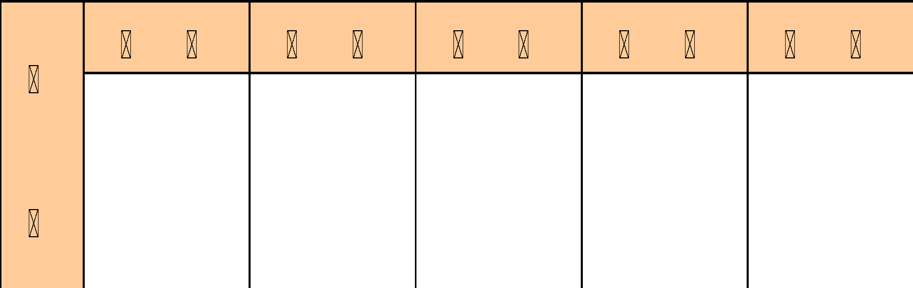
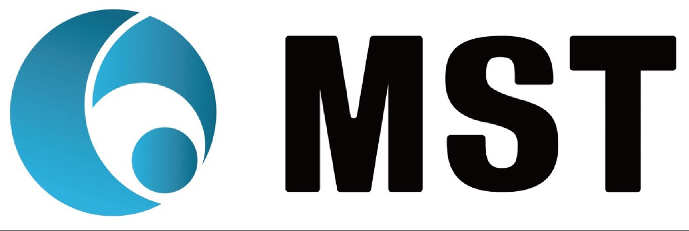

| 경영(MP) | 표준번호 | MP-1001 | 개정일자 | 2025-05-28 | ||||||||||||||||||||||||
| 개선 PROCESS | 개정번호 | 1 | 페 이 지 | 1 of 2 | ||||||||||||||||||||||||
| 1. 적용범위 및 목적 | 4. 프로세스 관리항목 | |||||||||||||||||||||||||||
| 성과지표 | 산 출 식 | 주관 팀 | 보고방법 | 주기 | ||||||||||||||||||||||||
| 시정조치 완료율 | 품질팀 | 보고서 | 매월 | |||||||||||||||||||||||||
| 2. 주관 팀장 (Process Owner) | ||||||||||||||||||||||||||||
| 품질팀 | ||||||||||||||||||||||||||||
| 3. 관련문서(절차서,지침서) | ||||||||||||||||||||||||||||
| 1. 지속적 개선 절차서 | ||||||||||||||||||||||||||||
| 2. 3정 5행 운영 지침서 | ||||||||||||||||||||||||||||
| 5. Process 제. 개정 이력 | ||||||||||||||||||||||||||||
| 개정번호 | 개정일자 | 개정사유 및 내용 | ||||||||||||||||||||||||||
| 0 | 2025-05-28 | ISO 9001:2015 최초 작성 | ||||||||||||||||||||||||||
| 1 | ||||||||||||||||||||||||||||
| 2 | ||||||||||||||||||||||||||||
| 3 | ||||||||||||||||||||||||||||
| 4 | 담 당 | 담 당 | 검 토 | 검 토 | 승 인 | |||||||||||||||||||||||
| 5 | ||||||||||||||||||||||||||||
| 6 | ||||||||||||||||||||||||||||
| 7 | ||||||||||||||||||||||||||||


| 경영(MP) | 표준번호 | MP-1001 | 개정일자 | 2025-05-28 | ||||||||||||
| 개선 PROCESS | 개정번호 | 1 | 페 이 지 | 2 of 2 | ||||||||||||
| 6. 프로세스 분석 | ||||||||||||||||